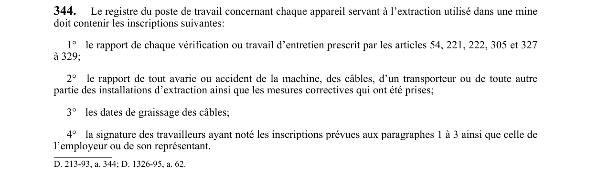

art-344-RSSM : registre poste travail concernant appareil
Le registre du poste de travail concernant chaque appareil servant à l’extraction utilisé dans une mine doit contenir les inscriptions suivantes: 1° le rapport de chaque vérification ou travail d’entretien prescrit par les articles 54, 221, 222, 305 et 327 à 329; 2° le rapport de tout avarie ou accident de la machine, des câbles, d’un transporteur ou de toute autre partie des installations d’extraction ainsi que les mesures correctives qui ont été prises; 3° les dates de graissage des câbles; 4° la signature des travailleurs ayant noté les inscriptions prévues aux paragraphes 1 à 3 ainsi que celle de l’employeur ou de son représentant. Cette obligation vise l'employeur.
🌐 LegisQuébec · 📄 PDF officiel
Texte officiel : capture du PDF

Toucher l'image pour l'agrandir🔗 Voir art. 344 RSSM dans le PDF (page 90)
Version : texte officiel du RSSM (RLRQ c. S-2.1, r. 14), à jour au 1er mai 2024 — Éditeur officiel du Québec
Voir aussi
- art. 343 : disposition abrogée · abrogé : disposition retirée du règlement.
- art. 345 : câble extraction équilibre utilisé mine · obligation : pour chaque câble d’extraction ou câble d’équilibre utilisé dans une mine, les données requises aux articles 284 et 285, avec les…
- ⚖️ Loi habilitante : LSST
- ↑ Index du bloc : Installations d'extraction
Pages qui pointent ici (4)
- art-307-RSSM : résultat examens mesures lubrifications noté Recueil législatif
- art-343-RSSM : disposition abrogée Recueil législatif
- art-345-RSSM : câble extraction équilibre utilisé mine Recueil législatif
- RSSM : Installations d'extraction (art. 281 à 349) Recueil législatif